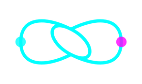

01 / abertura
10 meses depois: o que construímos juntos
Vocês confiaram num sistema que hoje sustenta a operação inteira da clínica. Antes de falar do próximo passo, vale lembrar onde chegamos.

medidos no banco de produção da clínica e verificados por auditoria técnica independente · jul/2026
09 / a solução · 01 de 04
Financeiro completo
Resolve a inadimplência invisível e a falta de visão financeira: hoje ela depende de um encontro mensal com a consultora pra saber como a clínica está.
“Ticket médio, eu não sei nada disso: coisas que eu preciso saber e não tenho claras pra mim. Ela me apresenta uma vez por mês, manda um print... mas eu gosto de ter um acompanhamento real.Fran · reunião de alinhamento, 24/07
- Fluxo de caixa, faturamento e ponto de equilíbrio em tempo real, sem esperar o fechamento do mês
- Contas a pagar e a receber, forma de pagamento (PIX / débito / crédito / dinheiro)
- Inadimplência e histórico financeiro por cliente
- Acesso da consultora ao sistema: ela puxa o dado direto, sem montar print à mão
- Cobrança automática pela Maya, direto no WhatsApp
10 / a solução · 02 de 04
Estoque completo
Resolve: estoque isolado. O NuvemVet já alerta vencimento, mas não sabe o que foi vendido no ReabilitaCão: duas fontes de verdade, risco de divergência.
- Categorias personalizadas de produto (Homeopatia, Suplementos, Alimentação Natural...)
- Lotes, validade e estoque mínimo
- Custo e quantidade disponível
- Baixa automática vinculada à venda real, sem lançar duas vezes
- Registro de quem comprou o quê e quando: base pra a Maya lembrar o tutor de recomprar quando o produto está acabando
11 / a solução · 03 de 04
Metas & comissões
Resolve duas dores: o cálculo manual mensal que consome metade do seu dia, e a falta de motivação da equipe: elas não correm atrás da meta porque não conseguem enxergar quanto falta.
“Eu não vejo muito esforço de bater meta, porque não olham. Se conseguissem visualizar melhor, iam correr atrás de marcar aqueles dois pacientes pra ganhar o dinheirinho a mais.Fran · reunião de alinhamento, 24/07
- Barra de progresso em tempo real: cada colaborador vê quanto falta pra bater a meta
- Ranking e destaque do mês, pra criar competição saudável na equipe
- Cálculo automático por atendimento e por produto, com tiers por volume (3% → 6%)
- Campanha mensal configurável por produto, sem precisar de código
12 / a solução · 04 de 04
Relatórios & indicadores
A camada que lê toda a operação pra decidir — clínico, comercial e financeiro juntos. O Financeiro controla o caixa; aqui é a visão estratégica de onde focar e o que cresce.
- Ticket médio e receita por categoria / serviço / produto
- Sessão avulsa vs. pacote: por que o cliente não fecha pacote
- Sazonalidade e comparativo mensal e anual
- Quem mais indica cliente novo, pra saber quais veterinários visitar